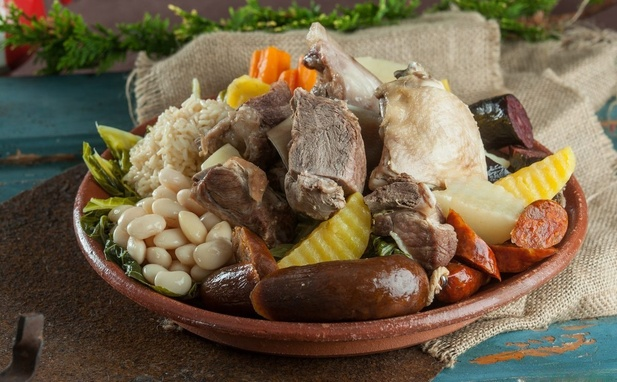

Cozido à Portuguesa

This recipe is a traditional portuguese dish (one of the most important dishes in Portugal), It has a enormous variety of aliments like diferent types of meat and vegetables.
Doses: 6 persons | Preparation Time: 1h30 mins | Cooking Time: 1 min | Total Time: 1h31 mins
Ingredients
- 500 g beef for cooking
- 500 g boneless leg of pork
- 400 g ribs
- 1 small chicken
- 1 pig's ear
- 1 meat chorizo
- 1 farinheira sausage
- 1 black pudding
- 1 kg of Portuguese cabbage (penca)
- 500 g cooked white beans
- 250 g of needled rice
- 3 large potatoes
- 3 large carrots
- 2 turnips
- 2 cloves of garlic
- 1 bay leaf
- Salt to taste
Steps
- Cut the chicken into pieces and season them with salt, as well as the beef, ribs, ear and leg of pork.Bring a large pot of salted water to the boil, add the bay leaf and the unpeeled washed garlic, and bring to a boil.Add all the meats, leaving the chicken for last.Also add the sausages, previously minced with a fork.
- Clean the cabbage and cut it into large pieces.Peel the carrots, turnips and potatoes.Using a fluted slicer, cut the potatoes in half and the carrots and turnips into chunks.Check the cooking of the meats and remove them as they are cooked.
- To the same broth, add the cabbage, potatoes, turnips, and carrots and let them cook.Remove them with a skimmer as soon as they are cooked.In a separate pan, pour 500 ml of the meat broth and, when it is boiling, add the loose rice.When cooked, adjust the seasoning and remove from the heat.
- Heat the remaining water, immerse all the meats and remove them as soon as they are very hot.Do the same with the beans and drain them.Cut the meat into pieces and the sausages into thick slices.Remove the bay leaf and garlic, place all the ingredients on a large platter and serve immediately.
Return